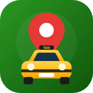

Ámbar Urbano
Amarillo taxi con detalles oscuros. Alegre, urbano y directo, con botones grandes.
Propuesta de demostración de TaxiCun, preparada por interOS para Compañía de Transportadores y Otros Servicios de Occidente S.A.S. (Occitrans S.A.S.) · No es la página oficial de la empresa

Occitrans Pedir taxi TaxiCun
TaxiCun
Vitrina de diseños de TaxiCun
Los tres diseños de TaxiCun usan el mismo motor: funcionan igual y solo cambia cómo se ven. La empresa elige con cuál abre TaxiCun en La Vega, y cada pasajero lo puede cambiar en Ajustes. Tócalos, pide un taxi de prueba y quédate con el que más te guste.
Prueba los dos lados: en una columna abre Conductor y conéctate; luego vuelve a Pasajero y pide un taxi. El servicio te llega en la otra vista.
Amarillo taxi con detalles oscuros. Alegre, urbano y directo, con botones grandes.
Con los colores de la empresa (aquí, unos propuestos), letra grande y pedido por pasos.
Modo oscuro con luces de neón. Elegante y cómodo para pedir taxi de noche.